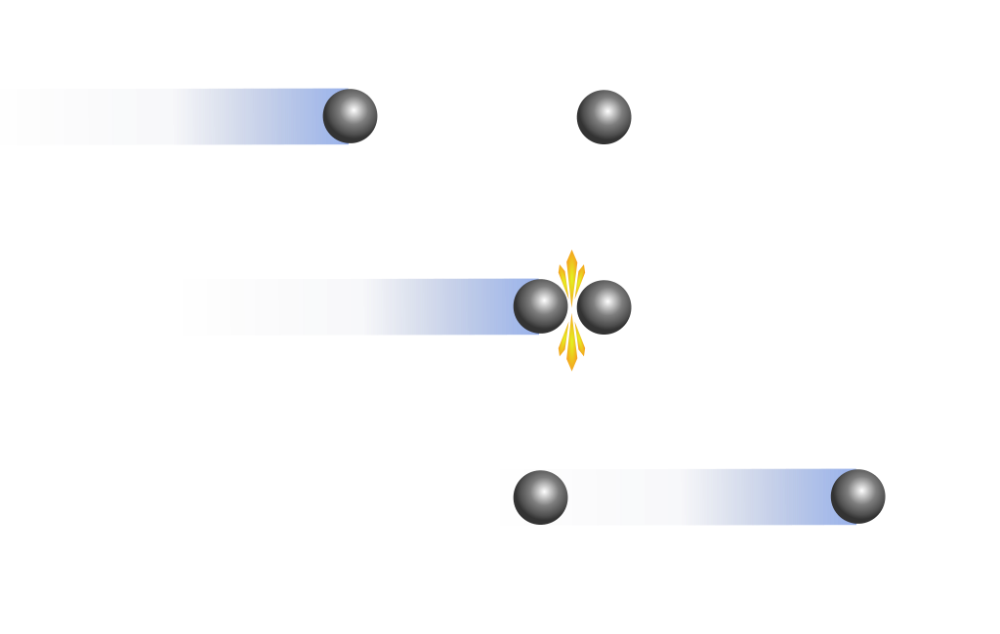
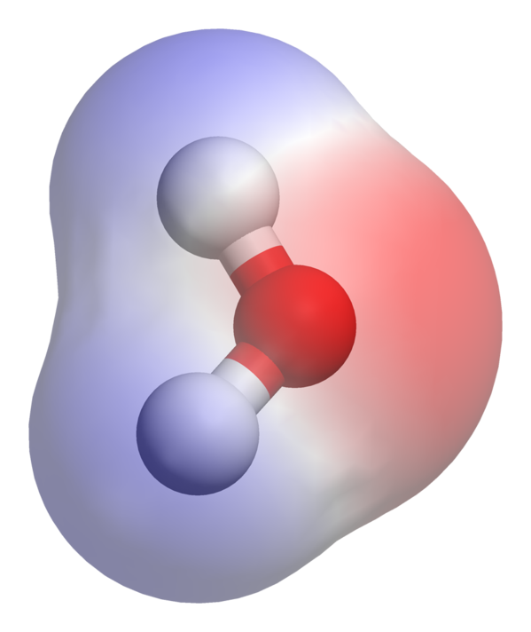

Properties of Ethyl Acetate
Seperti senyawa lainnya, Etil Asetat memiliki sifat fisika dan sifat kimia. Sifat fisika adalah perubahan yang dialami suatu benda tanpa membentuk zat baru. Sedangkan sifat kimia adalah sifat suatu zat yang berhubungan dengan terbentuknya zat jenis baru. Etil asetat sendiri merupakan salah satu bagian dari ester, maka sifat fisika dan sifat kimia yang dimiliki etil asetat tidak akan jauh berbeda dengan ester.
Physic's Properties of Ethyl Acetate
-

Bobot molekul
Senyawa etil asetat memiliki bobot molekul sebesar 88,105 gr/mol. Karena dapat diketahui bahwa rumus molekul etil asetat adalah CH3COOC2H5. Sehingga, bila dijumlahkan bobot per atomnya, akan menghasilkan berat sebesar 88,105 gr/mol.
-
Wujud
Wujud dari senyawa etil asetat adalah cairan. lebih spesifiknya, senyawa ini tak berwarna atau bening. Selain itu, senyawa ini memiliki aroma yang cukup khas, seperti eter, yaitu aroma buah.
-

Densitas
Densitas dari senyawa ini yaitu sebesar 0,902 gr/ml.
-
Titik Leleh, Titik Didih, dan Titik Nyala
Senyawa etil asetat memiliki titik leleh yang cukup rendah yaitu sebesar -83,6 0C. Sedangkan titik didih dari senyawa ini adalah sebesar 77,1 0C. Begitu pula titik nyala yang ia miliki cukup rendah yaitu sebesar -4 0C.
-

Kelarutan
Kelarutan senyawa ini dalam air bisa mencapai 8% pada suhu kamar, atau tepatnya 8,3 gram/100 ml pada suhu 20 0C. Kelarutannya meningkat pada suhu yang lebih tinggi. Namun, senyawa ini tidak stabil dalam air yang mengandung basa atau asam. Sedangkan kelarutan dalam etanol, aseton, dietil eter, dan benzena pun cukup besar, karena senyawa ini dapat bercampur dengan pelarut diatas.
-

Kepolaran
Senyawa ini termasuk senyawa polar. Karena dalam senyawa ini memiliki perbedaan dalam keelektronegatifan antara atom karbon dan atom oksigen. Adanya perbedaan kutub positif yang dimiliki oleh atom karbon dan kutub negatif yang dimiliki oleh atom oksigen.